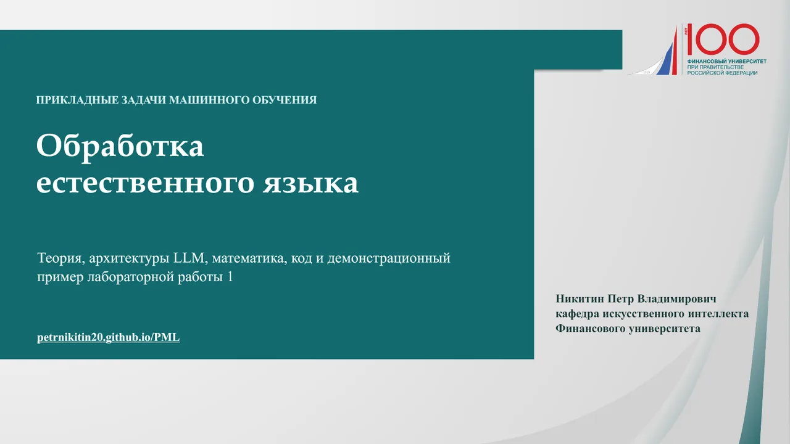

PML
Презентация NLP
Лабораторная работа 1
К лабораторной
Скачать PPTX
52 слайда
Обработка естественного языка
1
/ 52
‹

›
Предыдущий
Следующий
На весь экран
Клавиши ← и → переключают слайды. Home и End переходят к началу и концу.